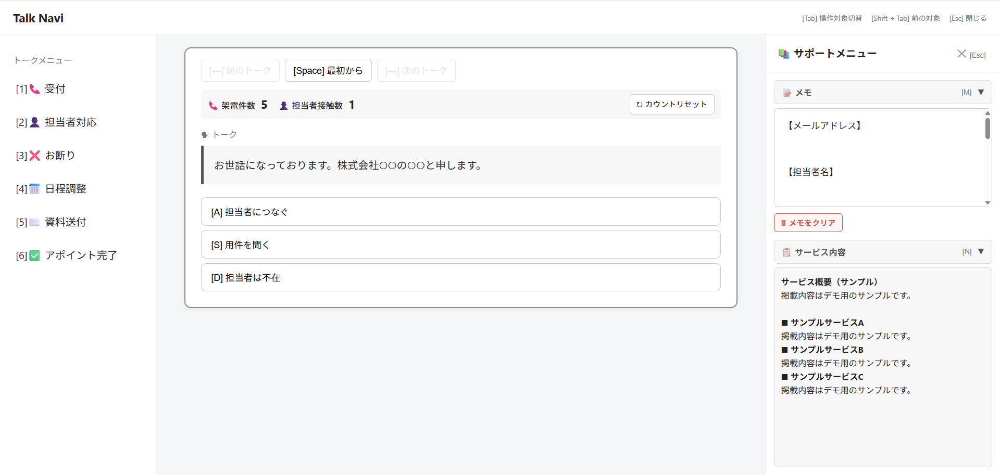

×

Talk Navi
Google Apps Script
JavaScript
HTML/CSS
Google Sheets
LocalStorage
概要
稼働前の練習や実際の架電で、相手の反応に合ったトークと必要な情報を確認できる、分岐型のトーク支援Webアプリです。選択肢を押すと次のトークが表示され、会話の流れに沿って進められます。
制作背景
稼働開始前の研修やロープレを通じて、相手の反応に応じて確認するトークや関連資料が分散していることに気づきました。想定外の返答があった際にも、会話の流れを保ちながら必要な内容を確認できる方法があれば、練習や実際の対応に役立つのではないかと考えました。未経験のメンバーから稼働への不安の声も聞いていたため、以前制作したSalesforce試験対策アプリの仕組みを応用し、状況に応じたトークや情報をアプリ内で確認できる形を考えました。
主な機能
- 選択肢に応じたトーク分岐
- 左側メニューからのトーク選択
- 前のトーク・次のトークへの移動
- キーボードによる操作と操作対象の切り替え
- サービス内容の確認
- メモ機能
- スケジュール確認
- メールアドレス確認用のフォネティックコード変換
- 架電件数・担当者接触数のカウントと保存
- Googleスプレッドシートからのトークデータ取得
工夫した点
- Salesforce試験対策アプリで使った選択肢表示の仕組みを応用
- トークスクリプトをもとに、相手の反応に応じて進める分岐構造
- 選択肢をボタンで表示し、次のトークを直感的に選べるUIを設計
- トークIDで分岐先を管理し、トークの流れを整理
-
Google
Sheetsでトークデータを管理し、コードを変更せず内容を更新できる構成に設計
- ロープレで動作を確認し、不足していた接続や誤った分岐先を修正
利用者の声
- 「使いやすかった」
-
「いきなり担当者までつながってテンパりました。これがないと無理でした。」
- 「ボタンを押して遷移するので、簡単に練習できます。」
- 「かなり便利」
フィードバック
- キーボードだけで操作したい
- 戻るボタンを誤って押した際に確認を表示してほしい
- サービス内容を簡単に確認したい
- メニューから別のトークへ移動した後も、元のトークへ戻りたい
- 競合比較表をサポートメニューから確認したい
改善
-
選択肢やメニュー、サポート機能などをキーボードだけで操作できるように変更
-
マウスの戻るボタンを押した際に「Talk
Naviを離れますか？」と確認を表示し、誤操作による離脱を防止
-
サービス内容をアプリ内のサポートメニューから確認できるように変更
-
メニューから移動した後も、移動前のトークへ戻れる履歴機能を追加
- 架電件数・担当者接触数のカウント機能を追加
- スケジュール確認・フォネティックコード機能を追加
- 不足していたトークの接続や誤った分岐を修正
導入後の変化
-
トークの流れや必要な情報をアプリ内で確認でき、資料を探す手間を削減
-
アプリ内で必要な情報を確認しながら、実際の対応を進めやすくなった
-
架電件数・担当者接触数のカウントをアプリ内で行えるようになり、手作業で数える負担を軽減
- 利用者から、練習や実際の対応に役立ったという感想を得た
今後の改善
-
競合比較表は作成済み。今後、サポートメニューから確認できる機能として実装予定。